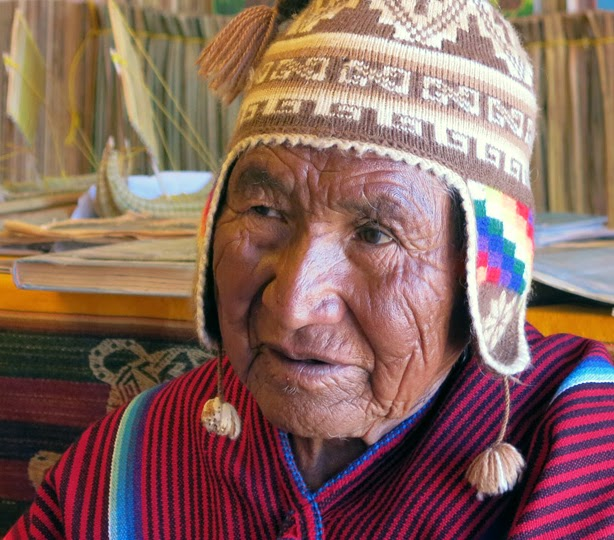

Paulino Esteban Cacasaca nacido en la Isla Suriqui, Lago Titicaca (fallecido el 12 de abril de 2016) fue un destacado maestro constructor de balsas de totora, reconocido internacionalmente por preservar y difundir una tradición milenaria del pueblo aymara. Desde joven, aprendió de sus ancestros el arte de tejer y ensamblar las fibras de totora, transformándolas en embarcaciones resistentes capaces de navegar grandes distancias. Décadas después, Thor Heyerdahl conoció a Paulino Esteban en el Lago Titicaca (Bolivia) y quedó impresionado por su habilidad en la construcción de balsas de totora, similares en técnica a las que él había usado en el Kon-Tiki. Heyerdahl invitó a Paulino a participar en su nueva expedición con la balsa RA II (1970), esta vez hecha con papiro y totora, que cruzó exitosamente el Atlántico.
El Kon-Tiki fue una balsa construida en 1947 por Thor Heyerdahl, quien viajó desde Perú hasta la Polinesia para demostrar que las civilizaciones antiguas podían haber cruzado el océano con medios simples. Décadas después, Heyerdahl conoció a Paulino Esteban, cuyos conocimientos sobre la totora inspiraron nuevas expediciones como la RA II. Hoy, su familia honra su legado con el proyecto “Kon-Tiki Bolivia”, una atracción turística y cultural ubicada en Huatajata, a orillas del Lago Titicaca. Sirviendo como museo a la vez que ofrece: Paseos en balsa, Tours culturales y ecologicos, talleres de artesania y construcción de balsas